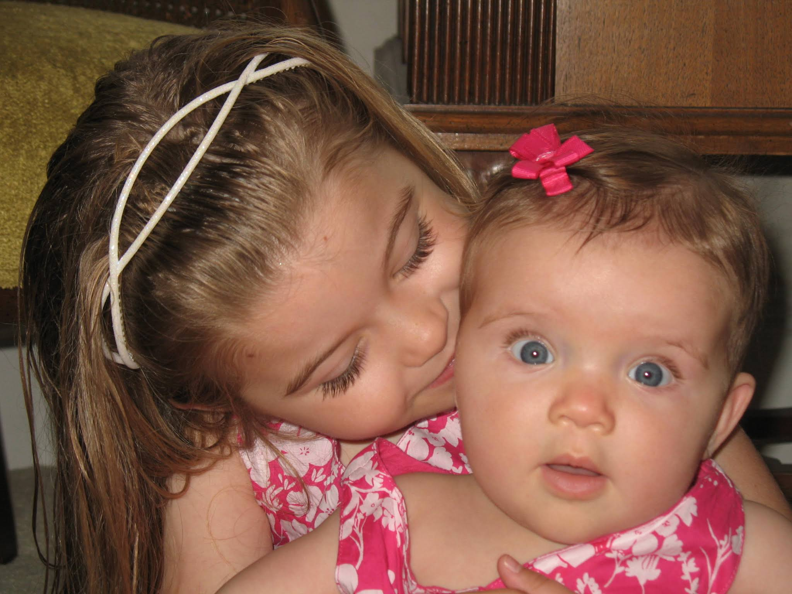
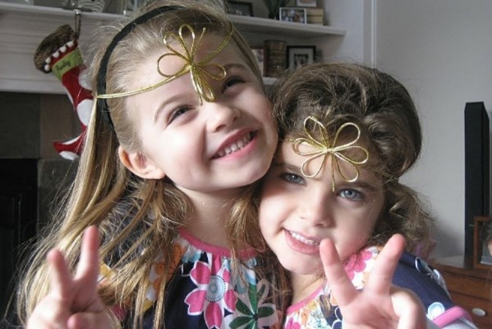
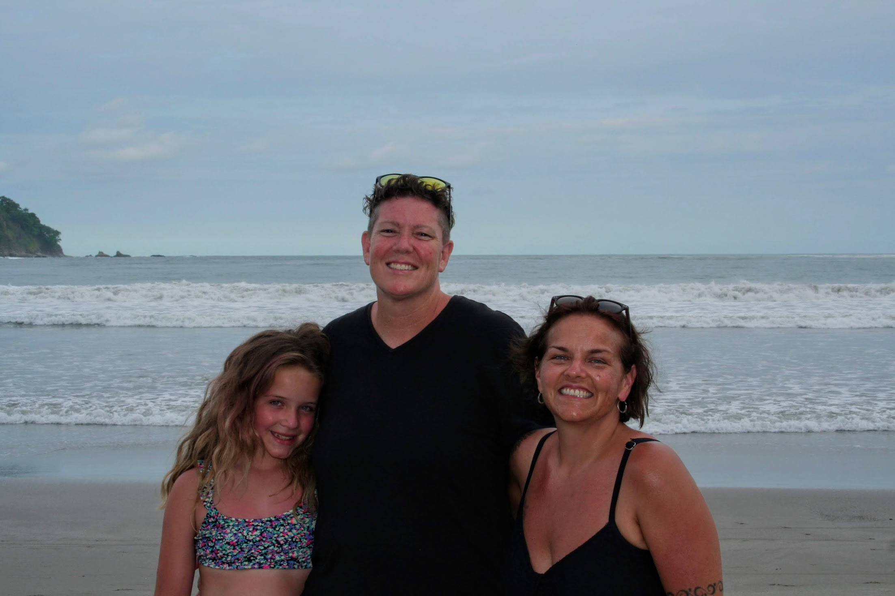

All About Me
By: Isabelle Snyder
The picture above is me and my sister Maddy. We are five years apart. She is probably my best friend.
Fun Facts About Me!
- I was born in Chicago
- I lived in Houston Texas for five years
- I have two moms
- I have a dog named Lucy and she is a Golden Doodle
- I love the band Panic! At The Disco
- Everyone in my family was born in a different state
- I know a little bit of sign language
- I love photography although I am not very good at it
- My family is all girls (even our pets!)
- My favorite show is The Office
- I love the movie The Purposal
- I have asthma


